Bekende en minder bekende functies van je skischoen.
1. Voor- en achterspoiler op je skischoen.
Niet alleen Max Verstappen heeft een voor- en achterspoiler op zijn auto, ook veel skischoenen zijn hier mee uitgerust. In tegenstelling tot de Formule 1 zijn de spoilers in en op je skischoenen niet gemaakt om luchtstromen te veranderen. Het zijn dan ook geen spoilers in die zin van een 'aerodynamisch hulpmiddel' die de luchtstroom verstoren (spoilen).
Achterspoiler
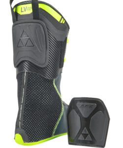
De (achter)spoiler in een skischoen is een verstelbaar 'plaatje' dat met klittenband achterop de binnenschoen zit bevestigd. Het heeft als doel om de binnenschoen beter te laten aansluiten om het onderbeen. Vooral bij een dun onderbeen (of zoals we in de podologie zeggen: een mager onderbeen) neemt het volume weg uit de schacht van de skischoen en geeft extra stabiliteit. Wedstrijdskiërs duwen de spoiler vaak wat verder naar beneden om zo meer vorlage te forceren.
Voorspoiler
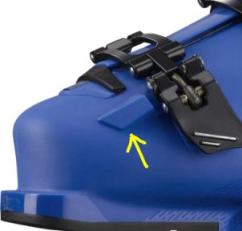
Ooit afgevraagd waarom er voor de eerste schnall een soort uitstulping zit? Dit is de voorspoiler en komt voornamelijk voor bij sportievere skischoenen. Deze 'buckle protector' komt namelijk uit de wedstrijdsport en dient er oorspronkelijk voor om de eerste schnall te beschermen tegen een slalompaal. Voor diegene die geen slaloms skiën kan hij ook beschermen tegen onhandig in- of uitstappen uit de stoeltjeslift?2. Verplaatsbare tong van de binnenschoen
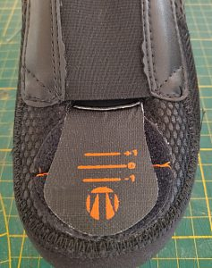
Je ziet het tegenwoordig steeds vaker, op de teen van je binnenschoen zit klittenband met een schaalverdeling. Sommige merken hebben een soort venstertje met streepjes. De tong van de binnenschoen zit met klittenband vast en kan zodoende los worden gemaakt en verplaatst. De tong kan dus meer naar voren (en dus lager) of meer naar achteren (en dus hoger) worden geplaatst. Onze ervaring is dat werkelijk bijna geen enkele skiwinkel hier advies over geeft. Een ander bijkomend voordeel is dat de tong niet meer stuk jan worden getrokken omdat het klittenband dan loslaat. Hard aan de tong trekken is sowieso een slecht idee en ook niet nodig als de skischoenen goed zijn ge-bootfit…3. Bootboard of 'zeppa' onder de binnenschoen
Onder de binnenschoen in de buitenschaal zit een soort plankje. Dit plankje, bootboard genaamd (of zeppa in het italiaans) heeft als functie de binnenschoen een vlakke ondergrond te geven en ook om de voet een bepaalde 'vorlage' te zetten. Dit bootboard is een belangrijk onderdeel van de skischoen en het verzorgt eigenlijk de 'interfacing' tussen voet/binnenschoen en de buitenschaal van de skischoen.
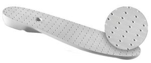
Veel van deze bootboards hebben een structuur van kleine kuiltjes zoals bij een golfbal en ze zijn gemaakt van een hard soort schuim. Als wij als bootfitter aan het bootboard gaan slijpen, om bijvoorbeeld de stand van de voet te veranderen, dan dienen de kuiltjes ervoor om zien of wij recht blijven en gelijkmatig het bootboard afslijpen. De kuiltjes zijn eigenlijk markeringen.
4. Uitsparingen in de zool van de skischoen
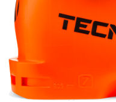
U heeft het misschien wel eens gezien bij sommige skischoenmerken: in de hak en het teenstuk zijn uitsparingen aangebracht (zie afbeelding). Deze uitsparingen zijn niet, zo als wel eens wordt gedacht, om gewicht te besparen maar hebben een belangrijke functie tijdens de fabricage van de skischoen.Skischoenen worden gemaakt met zogenaamde spuitgiet techniek. Het vloeibare kunststof (veelal PU) wordt met kracht in de mal gespoten en als de mal wordt geopend zijn de dunnere onderdelen zoals de wand al afgekoeld. Het hakstuk en teenstuk zijn echter veel dikker en doen er langer over om af te koelen. Hierdoor kan de zool van de skischoen vervormen en staat de skischoen niet meer vlak op de ondergrond. Door de uitsparingen koelen het dikke hak- en teenstuk sneller af.
5. Micro instelling van de schnallen
Hoewel deze functie bij iedereen bekend zou moeten zijn, krijgen wij
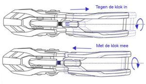
nog veel klanten die niet precies weten wat het is en hoe het werkt. De micro instelling van de schnallen is bedoeld om de skischoen nóg nauwkeuriger te laten sluiten. De twee delen van de schnall kan je ten opzichte van elkaar draaien (er zit schroefdraad in de schnall) en zodoende kan je de schnall korter of langer maken.Dus tegen de klok in wordt de schnall langer en met de klok mee wordt de schnall korter. Omdat het schroefdraad fijner is dan de ladder van de schnall kan je de skischoen preciezer strakker of losser doen.
6. Gaatjes in en lusjes op de binnenschoen
Op steeds meer binnenschoenen kan je ze tegenkomen: veter-oogjes en
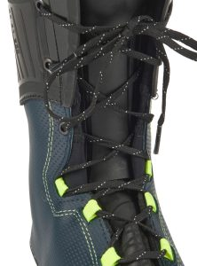
lusjes. Misschien ligt het voor de hand waar deze voor dienen maar veel van onze klanten vragen zich af of het zin heeft om deze veters daadwerkelijk te gaan gebruiken.Iets over de herkomst.
Skiracers veteren hun binnenschoen om een aantal redenen. Zo houdt het de binnenschoen goed op zijn plek, voorkomt het slippen van de hiel en zorgt het ervoor dat de tong goed op zijn plek blijft. Maar de belangrijkste reden is dat skiracers eerst hun binnenschoenen aantrekken, dichtveteren en dan in de zeer stijve (flexwaarden van 150 of 170) buitenschaal stappen. Vaak geholpen door speciaal talkpoeder om beter in de buitenschaal te glijden.
Of u dat nu allemaal nodig heeft valt natuurlijk te betwijfelen maar probeer het eens om de binnenschoenen te veteren en kijk of u verschil merkt.
En, u mag de binnenschoen gewoon in de buitenschoen laten hoor!
7. Andere kleur bij de instap
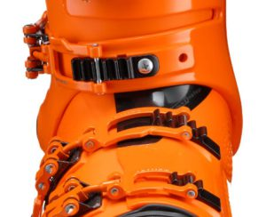
De instap van de skischoen is plek waar de skischoen de voet omsluit en is ook voor veel mensen een pijnpunt bij het aantrekken van de skischoenen. Vooral de zogenaamde overlap skischoenen kunnen door het stugge plastic een ware 'struggle' zijn. Het openmaken van de skischoen vergt een handigheid maar ook, bij skischoenen met een hogere flex boven de 110, enige kracht. Veel fabrikanten van skischoenen hebben dit probleem opgelost door de instap van twee hardheden kunststof te maken. De bovenste overlap is van een zachter kunststof zodat de skischoen makkelijker open gaat. Natuurlijk hoeft die zachtere flap geen andere kleur te zijn maar de marketingafdeling wil ook wat…8. Canting schroeven
Over de schroefjes aan de zijkant van de skischoenen schreven wij al
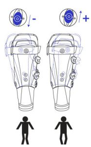
eerder eens een artikel maar nog steeds zijn er klanten die vragen waar de schroefjes voor zijn. Vooral als de skischoenen elders zijn gekocht en mensen komen bij ons voor een aanpassing dan valt het op dat hier nog een schone taak ligt voor de skiwinkels in Nederland. Er wordt niet uitgelegd waarvoor ze zijn. Laat staan dat de canting ook wordt ingesteld. En dat is jammer.De canting schroefjes zijn namelijk om de X- of O-stand van de benen te corrigeren zodat de ski's vlak (of zo vlak mogelijk) op de sneeuw staan. Beter gezegd de schroefjes geven de schacht van de skischoen de mogelijkheid om te kantelen en zo de stand van het onderbeen te volgen. Deze vorm van canting wordt 'cuff canting' genoemd naar het engelse woord voor schacht. Er bestaat ook een vorm van canting die onder de skischoen plaats vindt. Deze 'under boot canting' laat de skischoen nog beter een X- of O-been corrigeren. Indit in dit artikel lees je meer over canting.
9. Gaatjes (dimples) in de buitenschaal
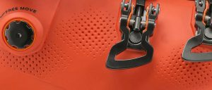
Sommige buitenschoenen (van het merk Technica) zien eruit als een golfbal. In de schaal zitten namelijk kleine deukjes of dimples genaamd. Anders dan bij het bootboard hierboven zijn deze gaatjes niet bedoeld om te schuren maar zijn wel een hulp voor de bootfitter.De dimples zitten namelijk niet willekeurig op de buitenschaal maar op plekken waar de skischoen vaak moet worden uitgedeukt en aangepast door de bootfitter. Bijvoorbeeld ter hoogte van de enkelbotten of bij de kleine teen enz.
De deukjes of dimples zorgen ervoor dat wanneer de bootfitter de buitenschoen door middel van een heatgun gaat verwarmen, de warmte makkelijker in het kunststof kan doordringen en zodoende wordt de schaal egaal verhit en ontstaat minder oppervlaktespanning. Met een golfbal heeft het dus weinig van doen…
10. Zoolmaat t.o.v. skischoen-maat
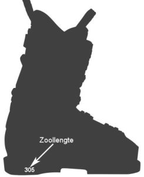
Net boven de hak, aan de binnenkant van de buitenschaal, staat op vrijwel alle skischoenen een getal. Dit getal geeft de zoollengte aan van de skischoen in mm. Dus gemeten van de voorkant van de skischoen tot en met de hak. Waarschijnlijk heb je dit getal wel een moeten doorgeven aan de skiwinkel of skiverhuur. Het is namelijk het getal dat wordt gebruikt om je binding af te stellen op je skischoen.Wat veel mensen niet weten is dat de zoollengte een bepaalde verhouding heeft met de schoenmaat van de skischoen. Skischoenen worden gemeten in de zogenaamde Mondopoint. Heeft u bijvoorbeeld schoenmaat 41 dan komt dat overeen met skischoenmaat 26.5.
Bij sommige skischoenmerken staat de skischoenmaat niet altijd even goed vermeld op de skischoen. Het kleine stickertje op de neus en de hak is er meestal na een weekje skiën wel af. Kunt u de maat niet vinden dan is dit is een handig weetje: De zoollengte – 40 is de skischoenmaat in Mondopoint. Dus als uw skischoen een zoollengte heeft van 305mm dan is de maat van de skischoen 26.5. Namelijk 305 – 40 = 265. Wel even de komma een plaats naar links maar het is natuurlijk geen hogere wiskunde.
Soms moet er een beetje afgerond worden, bijvoorbeeld bij een zoollengte van 301mm (26.1) of 309mm (26.9). Omdat skischoen maten altijd in halve maten gaan zoekt u de dichtstbijzijnde maat bijvoorbeeld 24.5, 25.5, 26.5, 27.5 etc. etc.